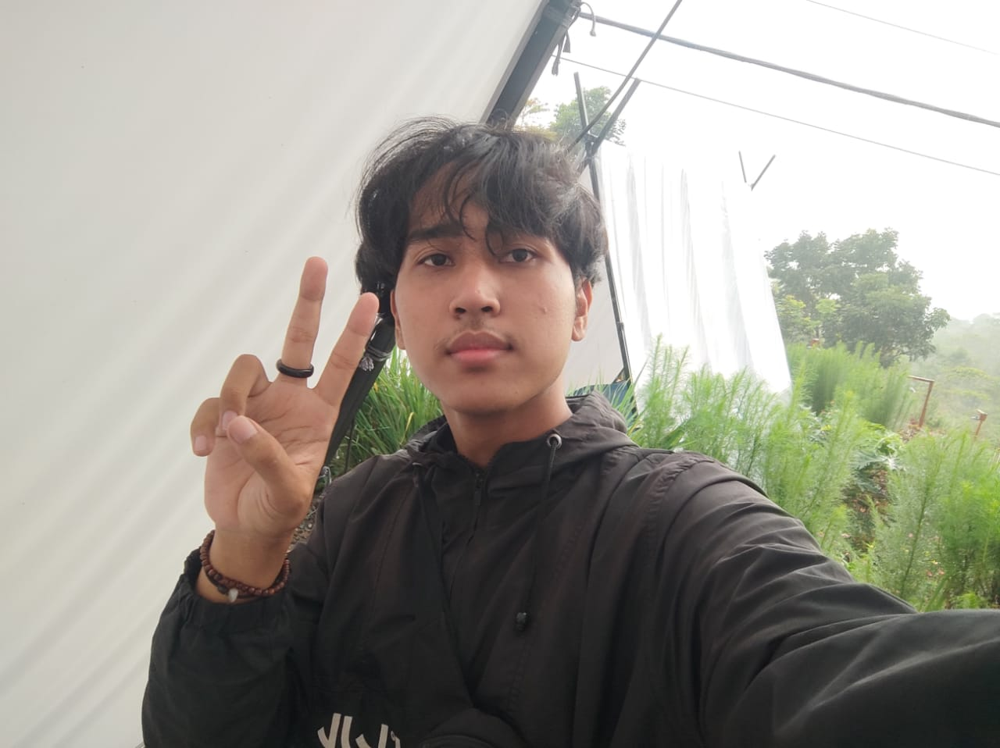

M.Ade Noval Firmansyah
MAHASISWA
About Me
Hallo! Perkenalkan saya Ade Noval, saya tertarik dengan UI/UX Desain dan Web Desain.Saya berharap menjadi seorang front-end developer
Saya dapat memanfaatkan dan memaksimalkan hasil yang tepat waktu untuk skema waktu yang nyata.
Bio
Age
20
Email
adenoval121@gmail.com
Phone
+62-857-4757-6437
Address
Lebakgowah Lebaksiu Kabupaten Tegal
Professional Skills
HTML
CSS
Microsoft Office
Flask
Figma
Canva
Unity
Experience Making Project
Pendeteksi Kerumunan
June, 2021 Semester 5
Project ini dibuat pada saat menginjak di Semester 5 dan salah satu metode pembelajaran baru yang diberikan oleh prodi yang di beri nama BIG PROJECT ,dikerjakan oleh 4 Orang dalam 1 kelompok dan bertujuan sama persis seperti nama projectnya yaitu pendeteksi kerumunan/social distance .
Klasifikasi Pengenalan Jenis Bunga Hias
June , 2021 Semester 6
Project ini sama persis dengan BIG PROJECT pada saat semester 5 , project ini dibuat pada semester 6 dan hanya berbeda dipembagian kelompoknya yang lebih mengerucut (2 orang).Dibuatnya project ini bertujuan memberi informasi yang berkaitan dengan bunga yang ingin dicari tahu informasinya mulai dari musim tumbuh,asal,warna,nama latin .
Achievement
Informatics Vocational Festival
2019
Workshop.
Linux Professional Institute
2019
Pelatihan.
HCIA-Cloud Computing V4.0 Course
2022
Pelatihan.
Portofolio

Semester 5
Website Pendeteksi Kerumunan
Website ini menggunakan openCV dan Tensorflow.cara kerja website ini adalah dengan cara mendeteksi objek yang masuk kedalam kamera, jika objek berdekatan maka akan ada pop up Warning,dan jika objek berjauhan maka pop up yang akan muncul adalah SAFE
Semester 6
Web & Aplikasi Pengenalan Jenis Bunga
diaplikasinya berfungsi mengklasifikasi berbagai jenis bunga,mulai dari nama latin,warna,musim tumbuh,dan asal tumbuh.sedangkan diWEB adalah halaman admin yang berfungsi merekam data riwayat dari user yang menggunakan aplikasi